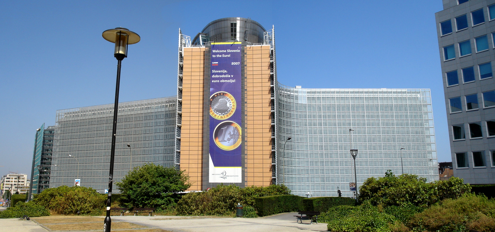

Instituțiile principale ale Uniunii Europene sunt:
Parlamentul European
Parlamentul European (abreviat PE) este o autoritate legislativă a Uniunii Europene (UE). Parlamentul este ales prin vot direct o dată la cinci ani. Împreună cu Consiliul Uniunii Europene și cu Comisia Europeană, exercită puterea legislativă a UE. Parlamentul este compus din 751 de membri, care reprezintă al doilea cel mai mare electorat democratic în lume (375 milioane de votanți eligibili în 2009). Începând cu anul 1979 este ales direct, o dată la 5 ani, prin alegeri generale, libere și secrete.
Ultimele alegeri la nivel european au fost alegerile din 2019.
Deși Parlamentul European are puterea legislativă pe care Consiliul și Comisia nu o posedă, acesta nu are controlul formal asupra inițiativei legislative, cum de altfel majoritatea parlamentelor naționale al membrilor Uniunii o au. Parlamentul este „prima instituție” a UE (menționată în tratate, având precedent ceremonial peste toate celelalte organe de autoritate la nivel european), și împarte în mod egal puterile legislative și cele bugetare cu Consiliul (cu excepția câtorva domenii în care se aplică procedurile legislative speciale). Are, de asemenea, controlul asupra bugetului UE. În cele din urmă, Comisia Europeană, organul executiv al UE, răspunde în fața Parlamentului. În special, Parlamentul alege președintele Comisiei, și aprobă (sau respinge) numirea întregii Comisii. Poate forța, ulterior, Comisia (consiliul de comisari europeni) să demisioneze prin adoptarea unei moțiuni de cenzură.
Parlamentul European are trei sedii oficiale – Bruxelles (Belgia), Luxemburg și Strasbourg (Franța).
Luxemburg este sediul birourilor administrative („Secretariatul General”). Reuniunile întregului Parlament („sesiunile plenare”) au loc la Strasbourg și la Bruxelles. Reuniunile comisiilor au loc la Bruxelles.

Comisia Europeană
Comisia Europeană (EC) este o instituție a Uniunii Europene, responsabilă cu întocmirea propunerilor legislative, punerea în aplicare a deciziilor, respectarea tratatelor UE și de gestionarea activității curente a UE. Comisarii depun un jurământ la Curtea Europeană de Justiție din orașul Luxemburg, făgăduind să respecte tratatele și să fie complet independenți în îndeplinirea îndatoririlor lor în timpul mandatului.
Comisia funcționează ca un cabinet de guvernământ, format din 27 de membri (informali cunoscuți sub denumirea de "comisari"). Fiecare stat membru al Uniunii Europene are un membru în Comisie, iar aceștia au obligația de a reprezenta interesele comune ale UE și nu interesele naționale ale statului din care face parte. Unul dintre cei 28 este președintele Comisiei, care este propus de Consiliul European și ales de Parlamentul European. Consiliul Uniunii Europene nominalizează apoi ceilalți 27 de membri ai Comisiei, de comun acord cu președintele nominalizat, iar ulterior cei 27 de membri ca un singur corp sunt supuși votului de investitură a Parlamentului European. Actuala Comisie este Comisia von der Leyen, care a preluat funcția la 1 decembrie 2019.
Termenul de „Comisie” este folosit fie pentru a-i desemna pe cei 27 de membri ai Colegiului Comisarilor fie pentru a desemna inclusiv organismele administrative formate din 32.000 de funcționari publici europeni care sunt împărțiți în departamente numite Directorate-Generale și Servicii. Limbile procedurale (de lucru) ale Comisiei sunt: engleza, franceza și germana. Membrii Comisiei și "cabinetele" lor (echipele de lucru) au sediul în clădirea Berlaymont din Bruxelles.

Consiliul European
Consiliul European este o instituție a Uniunii Europene. Este format din șefii de stat sau de guvern ai statelor membre ale Uniunii, Președintele Comisiei Europene și Președintele Consiliului European, actualmente Charles Michel. Înaltul Reprezentant al Uniunii pentru Afaceri Externe și Politică de Securitate, actualmente Josep Borrell, participă de asemenea la întruniri fără drept de vot.
Deși Consiliul European nu are nici o putere legislativă oficială, aceasta este învestit în temeiul Tratatului de la Lisabona, cu definirea "direcțiilor și priorităților politicilor generale" ale Uniunii. Este organismul strategic al Uniunii (cel care rezolva crizele), acționând ca o președinție colectivă a UE.
Reuniunile Consiliului European sunt prezidate de către președintele său și au loc cel puțin de 4 ori pe an, de obicei, în clădirea Justus Lipsius, sediul central al Consiliului Uniunii Europene din Bruxelles.
Consiliul European a fost înființat ca un organism informal în 1974, a devenit o instituție oficială a UE în 2009, când Tratatul de la Lisabona a intrat în vigoare. Actualul președinte este Charles Michel, fostul prim-ministru al Belgiei.